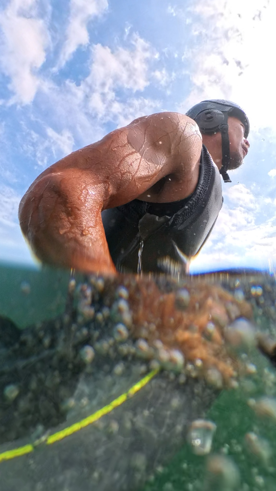

같은 바람에서 같은 윙을 써도 사람마다 답이 다릅니다. 레벨·체중·스타일 세 축으로 셋업을 고르고, 실제 GPS 트랙으로 그 선택이 맞았는지까지 봅니다.
"오늘 좀 잘 됐다" 를 확인할 방법이 없었습니다. 트랙을 올리면 어느 택이 느렸는지, 회전에서 몇 미터를 잃었는지, 어느 각도가 제일 빨랐는지가 나옵니다.
레그 · 런 · 택 · 자이브 · 포일링 구간을 하나씩 넘겨 보며 지도에서 그 자리를 확인합니다.
촬영 영상을 올리면 시각을 자동으로 맞춰 그 순간의 속도·각도를 같이 봅니다.
심박 회복·훈련 부하·수면을 함께 봐서 오늘 얼마나 타도 되는지 알려줍니다.
레벨이 바뀌면 정답도 바뀝니다. 같은 장비를 계속 권하지 않습니다.
일어서기와 활주. 큰 포일과 안정적인 보드가 먼저입니다.
포일을 유지한 채 도는 단계. 여기서 장비를 줄이기 시작합니다.
풍상 각도가 성적을 가릅니다. 포일 종횡비가 중요해지는 지점.
레이스 셋업. 0.5㎡ 차이가 순위를 바꾸는 영역입니다.
한 브랜드만 취급하면 그 브랜드 안에서만 답을 찾게 됩니다. 우리는 섞습니다.
장비 목록을 아무리 봐도 내 조건에 맞는지는 안 나옵니다. 타는 곳·바람·체중·목표를 알려주시면 그에 맞춰 답해 드립니다.